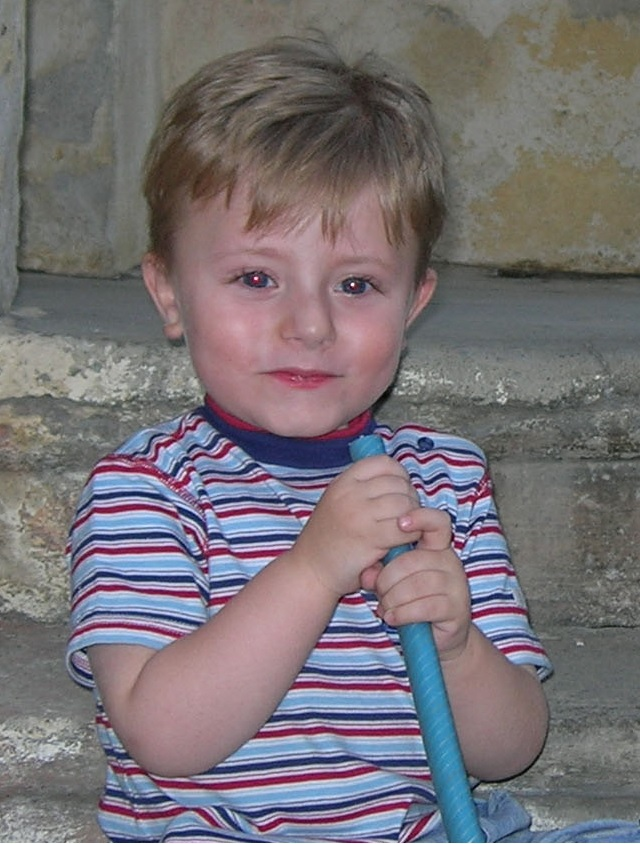
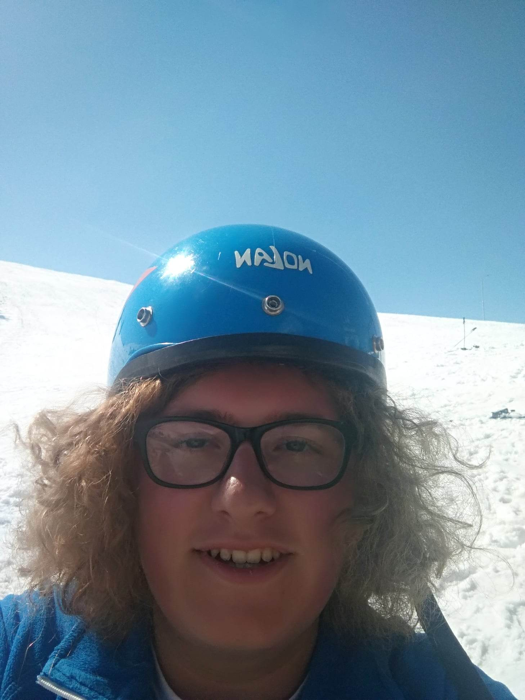

За мене
Јас сум Петар Радически, моментално студент на ФИНКИ. Роден сум на 8-ми јули 2003 година во Тетово. Према преданијата на моите родители, уште како бебе од неколку дена љубопитно сум гледал во сликите и фотографиите од Шар Планина кои го декорирале одделот за неонатологија во Тетовската болница, знак дека значаен дел од животот ќе ми се врти околу таа планина.
Уште од 2 годишна возраст сум бил редовен гостин во интернет-кафето на татко ми каде сум играл игри на интернет, најчесто Супер Марио. И до ден денеска сум благодарен на моите што на контролиран и забавен начин ме доближиле до поимот компјутер и благодарение на тоа веројатно бев единствено дете во Тетово кое на возраст помала од 4 години знаеше да чита.

Јас на 3 годишна возраст
Како што и претходно реков, оваа способност да читам од мала возраст ми беше многу корисна, па така во пониските одделенија од основното образование, секогаш бев избиран за водител на приредбите, па затоа имаше и неколку љубоморни соученици со чии испади на љубомора морав да се справувам.
Но, покрај тоа, основното образование ми беше интересно. Читањето е нешто како пирамидална шема, штом почнеш веднаш сакаш повеќе и повеќе да читаш и да тераш и други луѓе да читаат. Заради ова и мајка ми и татко ми ми купуваа енциклопедии кои драстично ми помагаа да имам сознанија далеку пред материјалот кои се изучуваше на училиште. Овие знаења ми беа корисни за многубројните натпревари на кои се пријавував и секогаш се враќав со 1-во, 2-ро или 3-то место, а во погорните одделенија, дури и стипендии и парични награди.
Мојата наклоност према читањето доведе до тоа моите родители да бидат загрижени дека претерувам, па затоа ме пратија на спортување. Од тогаш сум тренирал тенис, кошарка, ракомет и карате и во сите овие спортови сум уживал до таа мера што постоеше период од неколку месеци кога посетував тренинзи по три спортови одеднаш.
На крајот на основното образование бев прогласен за ученик на генерација и за тоа како награда покрај вообичаениот сертификат и привилегијата мојата слика да стои во ходникот на славните во моето училиште, на подарок добив и две книги (реков дека читањето е пирамидална шема :) ).

Јас на приредбата по повод 60 години постоење на нашето основно училиште.
Следен логичен избор за средно ми беше нешто што ги покрива моите области на интерес, односно многу работи, па затоа се одлучив за СОУГ „Кирил Пејчиновиќ“ во Тетово. Велат дека најдобрите пријателства се од средно, на своја кожа искусив дека тоа е точно. Таман кога сите убаво се запознавме и станавме блиски, започнаа рестрикциите па физичката настава веќе не беше опција.
Рестриктивните мерки и страшната паника која секојдневно ни беше пласирана негативно влијаеше на сите, па и на мене. Баш кога тој Велигден 2020 година го дочекавме со свеќите од дома, како врв на сите тие негативни емоции ми дојде само една мисла: „Боже, дали уште еднаш ќе можам навечер да излезам од дома?“. За среќа, работите се вратија во нормала и од тогаш си реков себеси дека никогаш нема беспотребно да се нервирам за ништо.
Година и пол онлајн настава подоцна, конечно се вративме во школските клупи, овојпат како матуранти. Секој ден од таа четврта година беше беше искористен до максимум само за убави работи бидејќи знаевме дека со секој нареден ден сме поблиску до тоа „страшно нешто“ наречено факултет. Ни велеа:„Уживајте сега, од октомври нема да можете глава да дигнете од учење“. Средното го завршив со просек 5,00 како ученик на генерација и со благодарница за особен придонес и менторство при натревари на моите соученици.
.jpg)
Еден од неколкуте мои концерти во рамките на гимназијата „Кирил Пејчиновиќ“.
Сепак, факултетот и не е толку страшен. И јас како и многу идни студенти од цела Македонија дојдов да се запишам на ФИНКИ и со тоа тврдам дека ја направив најкорисната одлука во мојот живот. Бев примен на насоката СИИС и уште од првиот ден се почувствував дека сум бил во право. Во првиот семестар влегов спремен (може да се каже и претпазливо заради коментарите кои сум ги слушал претходно) и завршив со просек 9,60. Многу ми помогна принципот на полагање колоквиуми кој овозможува континуирана работа и напредок. Овој принцип го користев и за вториот семестар и ќе го користам и понатаму.
Ова е накратко мојот живот од раѓање па до ден-денеска.

Уживање на Попова Шапка после успешно завршен прв семестар.